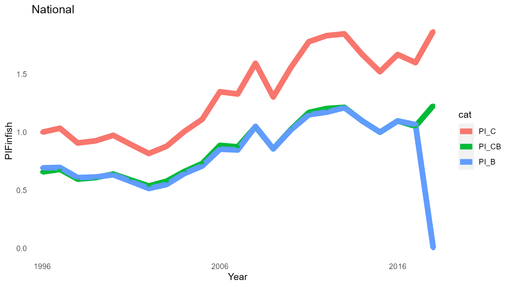
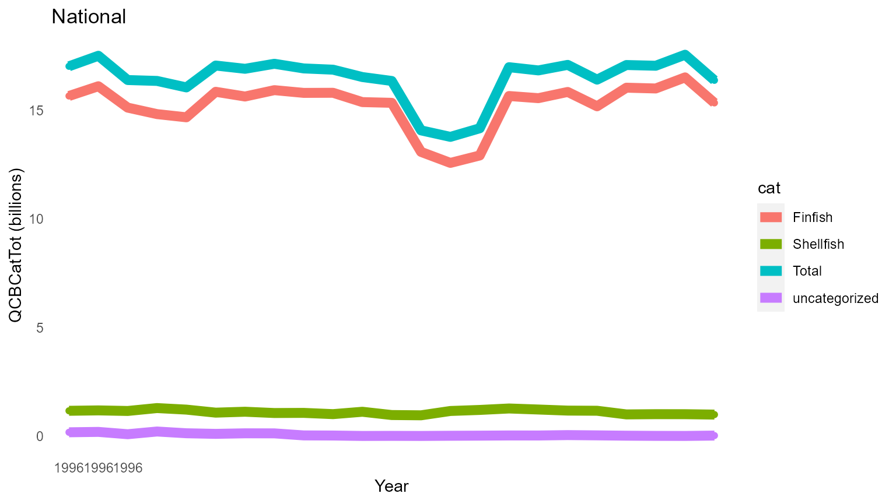

vignettes/FEUS-tables.Rmd
FEUS-tables.RmdPurpose: Construct the FEUS Commerical Fisheries state and national tables and output them to csv files
PKG <- c(# devtools::install_github("emilymarkowitz-NOAA/FishEconProdOutput", force = TRUE)
"FishEconProdOutput",
#Seperating species by taxonomic group
"taxize", # install.packages("remotes"); remotes::install_github("ropensci/taxize")
# Data Managment
"tidyverse",
"filesstrings",
"data.table",
"plyr",
"dplyr",
"rlist",
# #RMarkdown
"rmarkdown",
"ggpubr",
"kableExtra",
#Excel File Management
"xlsx",
"readxl"
)
for (p in PKG) {
if(!require(p,character.only = TRUE)) {
install.packages(p, repos = "http://cran.us.r-project.org")
require(p,character.only = TRUE)}
}
# Define what regions we are interested in
reg_order = c("National", "North Pacific", "Pacific", "Western Pacific (Hawai`i)",
"New England",
"Mid-Atlantic", "South Atlantic", "Gulf of Mexico")
reg_order_abbrv = c("US", "NP", "Pac", "WP", "NE", "MA", "SA", "GOM")
# Define Category
category0 = "category"
# Define Years
maxyr<-2018
yr <- minyr <- minyr.data<-as.numeric(paste0(floor((maxyr-24)/10),
ifelse(substr(maxyr, start = nchar((maxyr-24)),
stop = nchar((maxyr-24)))>=5, 6, 1))) #of data going into the analysis
minyr.ProdOut<-maxyr-19 # That will be shown in the analysis
baseyr<-as.numeric(paste0(floor(maxyr/10),
ifelse(substr(maxyr, start = nchar(maxyr),
stop = nchar(maxyr))>=5, 5, 0))) #Will change every 5 years, e.g., maxyr 2019 = byr 2015; maxyr 2020 = byr 2020; maxyr 2021 = byr 2020
# Folder name for output
folder<-"T567_ProdOutput"
titleadd = paste0(minyr.ProdOut, "To", maxyr, "_FSFEUS")
counter<-0
dir_in<-getwd()
if (TF) {
#Local Directories
dir_outputtables<-paste0(dir_in, "/output/")
dir.create(dir_outputtables)
# Define Directories
dir_analyses = paste0(dir_outputtables, folder)
dir.create(dir_analyses)
} else {
dir_analyses<-dir_outputtables<-dir_in
}
counter<-0
landings_data<-FishEconProdOutput::land
landings_data$category<-NULL # for this example, let's pretend that this column doesn't already exist
knitr::kable(head(landings_data), booktabs = T) %>%
kable_styling(latex_options = "striped")| Year | Pounds | Dollars | Tsn | State | Region | abbvreg | |
|---|---|---|---|---|---|---|---|
| 5 | 2001 | 613 | 750 | 83677 | Oregon | Pacific | Pac |
| 6 | 2003 | 172 | 119 | 83677 | Oregon | Pacific | Pac |
| 7 | 2006 | 131 | 131 | 83677 | North Carolina | South Atlantic | SA |
| 14 | 2005 | 15 | 30 | 83677 | Maryland | Mid-Atlantic | MA |
| 15 | 2004 | 3 | 2 | 83677 | New Jersey | Mid-Atlantic | MA |
| 16 | 2006 | 37 | 28 | 83677 | New Jersey | Mid-Atlantic | MA |
itis_reclassify() to categorize all of the speciesThis can take a minute!
temp <- itis_reclassify(tsn = unique(landings_data$Tsn),
categories = list('Finfish' = c(914179, # Infraphylum Gnathostomata
-914181), # Tetrapoda; - = do NOT include
"Shellfish" = c(82696, # Phylum Arthropoda
69458)), # Phylum Mollusca
uncategorized_name = "uncategorized")
tsn_id<-temp$df_out
# Remove anything that wasn't classified (we don't them for what we are doing here)
if (sum(tsn_id$category %in% c("Other", "Uncategorized"))>0) {
tsn_id<-tsn_id[!(tsn_id$category %in% c("Other", "Uncategorized")),
c("TSN", "category")]
}
# renaming columns for joining other datasets to this dataset
landings_data<-dplyr::rename(landings_data,
TSN = Tsn)
tsn_id$TSN<-as.numeric(tsn_id$TSN)
# Join the FOSS landings data to their respctive categories
landings_data<-dplyr::left_join(x = landings_data,
y = tsn_id,
by = "TSN")
# Rename columns so they match what the funciton uses
landings_data<-dplyr::rename(landings_data,
Tsn = TSN)
knitr::kable(head(landings_data), booktabs = T) %>%
kable_styling(latex_options = "striped")| Year | Pounds | Dollars | Tsn | State | Region | abbvreg | category | valid | rank | sciname |
|---|---|---|---|---|---|---|---|---|---|---|
| 2001 | 613 | 750 | 83677 | Oregon | Pacific | Pac | Shellfish | valid | subphylum | Crustacea |
| 2003 | 172 | 119 | 83677 | Oregon | Pacific | Pac | Shellfish | valid | subphylum | Crustacea |
| 2006 | 131 | 131 | 83677 | North Carolina | South Atlantic | SA | Shellfish | valid | subphylum | Crustacea |
| 2005 | 15 | 30 | 83677 | Maryland | Mid-Atlantic | MA | Shellfish | valid | subphylum | Crustacea |
| 2004 | 3 | 2 | 83677 | New Jersey | Mid-Atlantic | MA | Shellfish | valid | subphylum | Crustacea |
| 2006 | 37 | 28 | 83677 | New Jersey | Mid-Atlantic | MA | Shellfish | valid | subphylum | Crustacea |
out <- OutputAnalysis(landings_data = landings_data,
category0 = category0, # the name of the column you are categorizing by
baseyr = baseyr,
titleadd = titleadd,
dir_analyses = dir_analyses,
skipplots = TRUE,
reg_order = reg_order, # The region(s) you want to assess
reg_order_abbrv = reg_order_abbrv, # The region(s) you want to assess
save_outputs_to_file = TF) # Here I use the variable TF so I can change it once at the begining of my code, depending on my reporting purposes
#> [1] "National"
#> [1] "North Pacific"
#> [1] "Pacific"
#> [1] "Western Pacific (Hawai`i)"
#> [1] "New England"
#> [1] "Mid-Atlantic"
#> [1] "South Atlantic"
#> [1] "Gulf of Mexico"
#> [1] "Create spreadsheets"
#> [1] "Create plots"
names(out)
#> [1] "warnings_list" "editeddata_list" "index_list" "spp_list"
#> [5] "figures_list" "gridfigures_list"
for (jjj in 1:length(out)) {
assign(names(out)[jjj], out[[jjj]])
}
result <- lapply(index_list, "[", , c("Year", "cat", "PI_CB"))
a<-data.frame(result[1][[1]]$Year,
result[1][[1]]$cat)
for (i in 1:length(result)) {
a<-cbind.data.frame(a, result[i][[1]]$PI_CB)
}
names(a)<-c("Year", "cat", names(result))
a <- a[a$Year %in% minyr.ProdOut:maxyr &
a$cat %in% "Total", ]
a$cat<-NULL
a$Footnotes<-NA
temp_code<-a
a[,reg_order]<-round(x = a[,reg_order], digits = 2)
temp_print <- a
ProdOutputPI_Raw<-temp_code
if (TF) {
write_csv(x = ProdOutputPI_Raw, file = paste0(dir_analyses, "/ProdOutputPI_Raw.csv"))
}
ProdOutputPI_Print<-temp_print
if (TF) {
write_csv(x = ProdOutputPI_Print, file = paste0(dir_analyses, "/ProdOutputPI_Print.csv"))
}
ProdOutputPI_Print$Footnotes<-NULL
knitr::kable(ProdOutputPI_Print, booktabs = T) %>%
kable_styling(latex_options = "striped")| Year | National | North Pacific | Pacific | Western Pacific (Hawai`i) | New England | Mid-Atlantic | South Atlantic | Gulf of Mexico | |
|---|---|---|---|---|---|---|---|---|---|
| 73 | 1999 | 0.61 | 0.60 | 0.48 | 0.78 | 0.61 | 0.52 | 0.60 | 0.80 |
| 74 | 2000 | 0.64 | 0.64 | 0.49 | 0.85 | 0.61 | 0.54 | 0.68 | 0.93 |
| 75 | 2001 | 0.59 | 0.58 | 0.46 | 0.84 | 0.56 | 0.49 | 0.65 | 0.84 |
| 76 | 2002 | 0.55 | 0.53 | 0.44 | 0.75 | 0.56 | 0.50 | 0.60 | 0.70 |
| 77 | 2003 | 0.58 | 0.59 | 0.46 | 0.81 | 0.59 | 0.51 | 0.59 | 0.65 |
| 78 | 2004 | 0.63 | 0.70 | 0.50 | 0.82 | 0.62 | 0.52 | 0.60 | 0.66 |
| 79 | 2005 | 0.71 | 0.74 | 0.53 | 0.88 | 0.75 | 0.67 | 0.64 | 0.73 |
| 80 | 2006 | 0.78 | 0.83 | 0.56 | 0.90 | 0.90 | 0.66 | 0.66 | 0.65 |
| 81 | 2007 | 0.80 | 0.91 | 0.65 | 0.89 | 0.77 | 0.65 | 0.73 | 0.76 |
| 82 | 2008 | 0.92 | 1.14 | 0.72 | 0.95 | 0.73 | 0.69 | 0.74 | 0.86 |
| 83 | 2009 | 0.77 | 0.89 | 0.66 | 0.93 | 0.65 | 0.67 | 0.71 | 0.67 |
| 84 | 2010 | 0.91 | 1.10 | 0.72 | 1.01 | 0.74 | 0.73 | 0.75 | 0.87 |
| 85 | 2011 | 1.04 | 1.28 | 0.89 | 1.08 | 0.82 | 0.78 | 0.79 | 0.96 |
| 86 | 2012 | 1.05 | 1.27 | 0.93 | 1.23 | 0.81 | 0.83 | 0.87 | 0.89 |
| 87 | 2013 | 1.09 | 1.25 | 0.89 | 1.12 | 0.87 | 0.93 | 0.99 | 1.17 |
| 88 | 2014 | 1.07 | 1.13 | 0.96 | 1.02 | 0.94 | 0.99 | 1.02 | 1.29 |
| 89 | 2015 | 1.00 | 1.00 | 1.00 | 1.00 | 1.00 | 1.00 | 1.00 | 1.00 |
| 90 | 2016 | 1.06 | 1.11 | 1.02 | 1.11 | 0.99 | 0.98 | 0.96 | 1.07 |
| 91 | 2017 | 1.03 | 1.07 | 1.06 | 1.05 | 0.93 | 0.96 | 1.02 | 1.00 |
| 92 | 2018 | 1.14 | 1.30 | 1.05 | 1.13 | 0.92 | 0.95 | 1.06 | 1.07 |
result <- lapply(index_list, "[", , c("Year", "cat", "Q_CB"))
a<-data.frame(result[1][[1]]$Year,
result[1][[1]]$cat)
for (i in 1:length(result)) {
a<-cbind.data.frame(a, result[i][[1]]$Q_CB)
}
names(a)<-c("Year", "cat", names(result))
a <- a[a$Year %in% minyr.ProdOut:maxyr &
a$cat %in% "Total", ]
a$cat<-NULL
a$Footnotes<-NA
temp_code<-a
a[,reg_order]<-round(x = a[,reg_order]/1e6, digits = 2)
for (i in 2:length(reg_order)){
a[,i]<-prettyNum(x = a[,i], big.mark = ",")
}
temp_print <- a
ProdOutputQ_Raw<-temp_code
if (TF) {
write_csv(x = ProdOutputQ_Raw, file = paste0(dir_analyses, "/ProdOutputQ_Raw.csv"))
}
ProdOutputQ_Print<-temp_print
if (TF) {
write_csv(x = ProdOutputQ_Print, file = paste0(dir_analyses, "/ProdOutputQ_Print.csv"))
}
ProdOutputQ_Print$Footnotes<-NULL
knitr::kable(ProdOutputQ_Print, booktabs = T) %>%
kable_styling(latex_options = "striped")| Year | National | North Pacific | Pacific | Western Pacific (Hawai`i) | New England | Mid-Atlantic | South Atlantic | Gulf of Mexico | |
|---|---|---|---|---|---|---|---|---|---|
| 73 | 1999 | 7,920.3 | 3,228.05 | 990.07 | 163.64 | 1,378.69 | 874.8 | 324.18 | 976.78 |
| 74 | 2000 | 7,646.33 | 2,782.45 | 1,026.45 | 160.52 | 1,457.82 | 824.14 | 306.28 | 1043.73 |
| 75 | 2001 | 7,431.76 | 2,773.08 | 995.32 | 128.64 | 1,501.57 | 894.85 | 261.7 | 917.57 |
| 76 | 2002 | 7,577.2 | 2,802.56 | 1,017.12 | 138.47 | 1,583.35 | 846.6 | 291.4 | 901.86 |
| 77 | 2003 | 7,855.5 | 3,036.34 | 1,151.43 | 128.96 | 1,495.69 | 867.64 | 268.44 | 944.38 |
| 78 | 2004 | 8,010.2 | 3,211.39 | 963 | 140.02 | 1,637.54 | 952.68 | 270.54 | 852.76 |
| 79 | 2005 | 7,610.39 | 3,247.5 | 853.99 | 160.41 | 1,553.48 | 832.96 | 213.3 | 730.95 |
| 80 | 2006 | 7,546.23 | 3,098.61 | 888.8 | 147.48 | 1,609.26 | 723.91 | 217.29 | 908.79 |
| 81 | 2007 | 7,179.73 | 3,096.09 | 757.33 | 170.47 | 1,378.79 | 765.41 | 208.06 | 801.31 |
| 82 | 2008 | 6,719.2 | 2,850.35 | 698.06 | 177.98 | 1,335.29 | 741.02 | 213.52 | 701.50 |
| 83 | 2009 | 6,888.27 | 2,702.96 | 821.71 | 152.68 | 1,438.39 | 771.44 | 205.69 | 860.95 |
| 84 | 2010 | 6,882.24 | 2,771.47 | 863.92 | 166.43 | 1,516.27 | 825.3 | 207.88 | 616.86 |
| 85 | 2011 | 7,313.31 | 2,913.12 | 899.51 | 168.78 | 1,570.42 | 855.83 | 190.6 | 782.44 |
| 86 | 2012 | 7,155.96 | 2,831.56 | 829.97 | 182.04 | 1,720.25 | 765.51 | 176.87 | 802.10 |
| 87 | 2013 | 7,070.72 | 2,999.37 | 1,013.22 | 192.13 | 1,524.38 | 586.55 | 155.4 | 728.83 |
| 88 | 2014 | 6,930.8 | 2,945.11 | 872.86 | 198.09 | 1,446.72 | 583.56 | 174.97 | 737.94 |
| 89 | 2015 | 6,968.71 | 3,206.74 | 629.88 | 206.74 | 1,400.7 | 597.16 | 189.02 | 738.47 |
| 90 | 2016 | 6,935.02 | 2,898.53 | 740.66 | 211.79 | 1,481.67 | 646.36 | 187.27 | 837.31 |
| 91 | 2017 | 7,188.36 | 3,147.49 | 743.27 | 221.26 | 1,531.25 | 612.91 | 180.86 | 807.50 |
| 92 | 2018 | 6,667.59 | 2,686.96 | 721.82 | 210.33 | 1,629.73 | 587.89 | 146.33 | 805.27 |
result <- lapply(index_list, "[", , c("Year", "cat", "PI_CB", "Q_CB", "v"))
a<-result$National
a<-a[a$Year %in% minyr.ProdOut:maxyr, ]
a<-dplyr::rename(a,
PI = PI_CB,
Q = Q_CB,
V = v)
# temp_code
a.pi<-spread(a[!(names(a) %in% c("V", "Q"))], cat, PI)
names(a.pi)[-1]<-paste0(names(a.pi)[-1], "_PI")
a.q<-spread(a[!(names(a) %in% c("PI", "V"))], cat, Q)
names(a.q)[-1]<-paste0(names(a.q)[-1], "_Q")
a.v<-spread(a[!(names(a) %in% c("PI", "Q"))], cat, V)
names(a.v)[-1]<-paste0(names(a.v)[-1], "_V")
b<-left_join(a.pi, a.q, by = c("Year"))
b<-left_join(b, a.v, by = c("Year"))
b<-b[,match(x = c("Year",
names(b)[grep(pattern = "_V", x = names(b), ignore.case = T)],
names(b)[grep(pattern = "_PI", x = names(b), ignore.case = T)],
names(b)[grep(pattern = "_Q", x = names(b), ignore.case = T)]),
names(b))]
b<-b[,match(x = c("Year",
names(b)[grep(pattern = "fin", x = names(b), ignore.case = T)],
names(b)[grep(pattern = "Shell", x = names(b), ignore.case = T)],
names(b)[grep(pattern = "Total", x = names(b))]),
names(b))]
b<-b[b$Year %in% minyr:maxyr, ]
temp_code<-b
temp_code$Footnotes<-NA
# temp_print
b<-a
b$PI<-round(x = b$PI, digits = 2)
b$Q<-prettyNum(x = round(x = b$Q/1e6), digits = 2, big.mark = ",")
b$V<-prettyNum(x = round(x = b$V/1e6), digits = 2, big.mark = ",")
b.pi<-spread(b[!(names(b) %in% c("V", "Q"))], cat, PI)
names(b.pi)[-1]<-paste0(names(b.pi)[-1], "_PI")
b.q<-spread(b[!(names(b) %in% c("PI", "V"))], cat, Q)
names(b.q)[-1]<-paste0(names(b.q)[-1], "_Q")
b.v<-spread(b[!(names(b) %in% c("PI", "Q"))], cat, V)
names(b.v)[-1]<-paste0(names(b.v)[-1], "_V")
b<-left_join(b.pi, b.q, by = c("Year"))
b<-left_join(b, b.v, by = c("Year"))
b<-b[,match(x = c("Year",
names(b)[grep(pattern = "_V", x = names(b), ignore.case = T)],
names(b)[grep(pattern = "_PI", x = names(b), ignore.case = T)],
names(b)[grep(pattern = "_Q", x = names(b), ignore.case = T)]),
names(b))]
b<-b[,match(x = c("Year",
names(b)[grep(pattern = "fin", x = names(b), ignore.case = T)],
names(b)[grep(pattern = "Shell", x = names(b), ignore.case = T)],
names(b)[grep(pattern = "Total", x = names(b))]),
names(b))]
b<-b[b$Year %in% minyr:maxyr, ]
temp_print<-b
temp_print$Footnotes<-NA
ProdOutputUS_Raw<-temp_code
if (TF) {
write_csv(x = ProdOutputUS_Raw, file = paste0(dir_analyses, "/ProdOutputUS_Raw.csv"))
}
ProdOutputUS_Print<-temp_print
if (TF) {
write_csv(x = ProdOutputUS_Print, file = paste0(dir_analyses, "/ProdOutputUS_Print.csv"))
}
ProdOutputUS_Print$Footnotes<-NULL
knitr::kable(ProdOutputUS_Print, booktabs = T) %>%
kable_styling(latex_options = "striped")| Year | Finfish_V | Finfish_PI | Finfish_Q | Shellfish_V | Shellfish_PI | Shellfish_Q | Total_V | Total_PI | Total_Q |
|---|---|---|---|---|---|---|---|---|---|
| 1999 | 2,955 | 0.61 | 4,857 | 1,813 | 0.61 | 2,956 | 4,812 | 0.61 | 7,920 |
| 2000 | 3,004 | 0.64 | 4,697 | 1,876 | 0.66 | 2,848 | 4,922 | 0.64 | 7,646 |
| 2001 | 2,755 | 0.59 | 4,692 | 1,607 | 0.61 | 2,648 | 4,398 | 0.59 | 7,432 |
| 2002 | 2,494 | 0.54 | 4,648 | 1,616 | 0.57 | 2,835 | 4,141 | 0.55 | 7,577 |
| 2003 | 2,798 | 0.58 | 4,843 | 1,702 | 0.58 | 2,927 | 4,527 | 0.58 | 7,855 |
| 2004 | 3,262 | 0.66 | 4,931 | 1,773 | 0.59 | 2,980 | 5,067 | 0.63 | 8,010 |
| 2005 | 3,477 | 0.73 | 4,763 | 1,912 | 0.69 | 2,754 | 5,414 | 0.71 | 7,610 |
| 2006 | 3,915 | 0.89 | 4,418 | 1,919 | 0.62 | 3,117 | 5,855 | 0.78 | 7,546 |
| 2007 | 3,834 | 0.87 | 4,388 | 1,915 | 0.71 | 2,712 | 5,771 | 0.80 | 7,180 |
| 2008 | 4,218 | 1.05 | 4,027 | 1,932 | 0.73 | 2,645 | 6,172 | 0.92 | 6,719 |
| 2009 | 3,397 | 0.86 | 3,964 | 1,850 | 0.63 | 2,938 | 5,273 | 0.77 | 6,888 |
| 2010 | 4,116 | 1.03 | 4,014 | 2,110 | 0.74 | 2,855 | 6,257 | 0.91 | 6,882 |
| 2011 | 4,994 | 1.17 | 4,270 | 2,543 | 0.84 | 3,030 | 7,576 | 1.04 | 7,313 |
| 2012 | 4,911 | 1.20 | 4,079 | 2,554 | 0.82 | 3,104 | 7,508 | 1.05 | 7,156 |
| 2013 | 5,047 | 1.21 | 4,157 | 2,646 | 0.92 | 2,885 | 7,735 | 1.09 | 7,071 |
| 2014 | 4,565 | 1.10 | 4,159 | 2,832 | 1.04 | 2,733 | 7,436 | 1.07 | 6,931 |
| 2015 | 4,354 | 1.00 | 4,354 | 2,581 | 1.00 | 2,581 | 6,969 | 1.00 | 6,969 |
| 2016 | 4,525 | 1.10 | 4,124 | 2,819 | 1.01 | 2,785 | 7,382 | 1.06 | 6,935 |
| 2017 | 4,668 | 1.05 | 4,439 | 2,676 | 0.99 | 2,715 | 7,381 | 1.03 | 7,188 |
| 2018 | 4,779 | 1.23 | 3,887 | 2,751 | 0.99 | 2,779 | 7,570 | 1.14 | 6,668 |
Here are a few figures that come out of this analysis!
Some come already in convient grids…
gridfigures_list$`000_All_byr2015_categoryPI_Total`
gridfigures_list$`000_All_byr2015_categoryQ_CB_Q`And in single plots!
figures_list$National__PI_Finfish
figures_list$National__Q_CB_CatTot_QCatTot